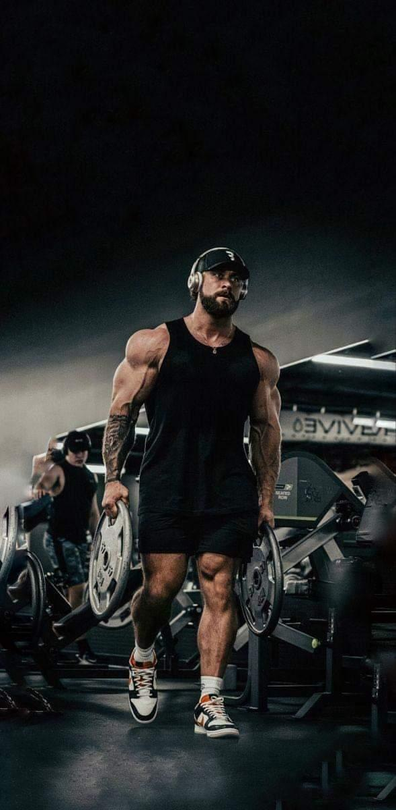
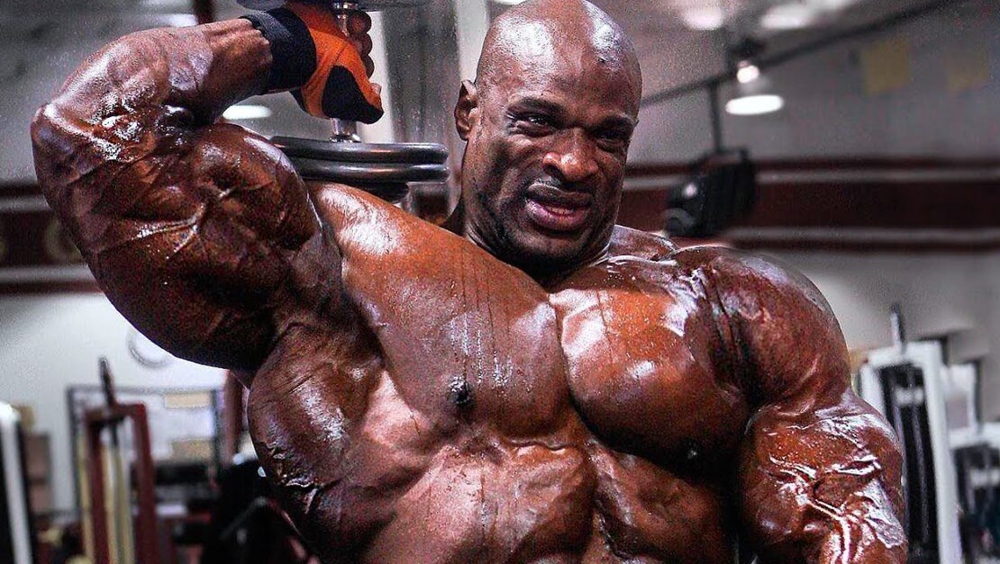

portfolio



est un culturiste, acteur, réalisateur, producteur de cinéma et homme politique austro-américain, né le 30 juillet 1947 à Thal, en Autriche. Surnommé le « Chêne autrichien » (« Austrian Oak » en anglais) pendant ses années de culturisme, puis « Schwarzy » pendant sa carrière d'acteur, et plus récemment « Governator » (mot-valise mélangeant en anglais « Governor » et Terminator), il se fait tout d'abord connaître en devenant un des plus grands culturistes à partir des années 1970, avec notamment cinq titres de Mister Univers et sept titres de Monsieur Olympia. Avec douze titres de ces deux catégories différentes, il est l'un des culturistes les plus titrés de tous les temps. Son physique exceptionnel lui ouvre les portes d'Hollywood, dont il devient l'une des plus grandes vedettes mondiales du cinéma d'action dans les années 1980-1990, ainsi qu'en témoigne son importante filmographie, dans laquelle figurent aussi bien le genre fantastique que la comédie ou la science-fiction. Durant cette période, il a notamment travaillé avec des cinéastes tels que John Milius, James Cameron, John McTiernan, Paul Verhoeven et Ivan Reitman, et a reçu le Golden Globe de la révélation masculine de l'année en 1977 pour son rôle dans Stay Hungry. Engagé politiquement avec le Parti républicain, il est élu 38e gouverneur de Californie le 17 novembre 2003. Il est réélu à ce poste le 7 novembre 2006. Il quitte ses fonctions le 3 janvier 2011. Depuis, Arnold Schwarzenegger a repris sa carrière d'acteur. En 2004 et 2007, il fait partie du Time 100, classement établi par le magazine Time des 100 personnalités les plus influentes dans le monde3,4. En 2010, il fonde l'organisation non gouvernementale R20 pour participer à la lutte contre le changement climatique. En 2015, Il reprend au cinéma son rôle fétiche du Terminator pour le cinquième film de la franchise, Terminator Genisys. Quatre ans plus tard, il reprend son rôle pour le sixième film, Terminator: Dark Fate, réalisé par Tim Miller et sorti en 2019.
La Force Athlétique (ou Powerlifting en anglais) est un sport de force à catégories (âge, poids de corps, sexe) reconnu de Haut Niveau, composé de trois mouvements qui sont la Flexion de Jambes, le Développé Couché et le Soulevé de Terre.
Le culturisme1, ou bodybuilding en anglais2,3, est une discipline et un art de la performance qui consiste principalement à surdévelopper sa masse musculaire (hypertrophie) dans un but esthétique puis à l'exhiber en exécutant des poses plastiques codifiées, isolément ou enchaînées dans une chorégraphie
Le CrossFit est une marque commerciale d'entraînement croisé (Cross Training) promu par la société CrossFit Inc. Dans le langage courant, le terme CrossFit est assimilé à la pratique sportive pluridisciplinaire suivant les principes énoncés par la marque éponyme.